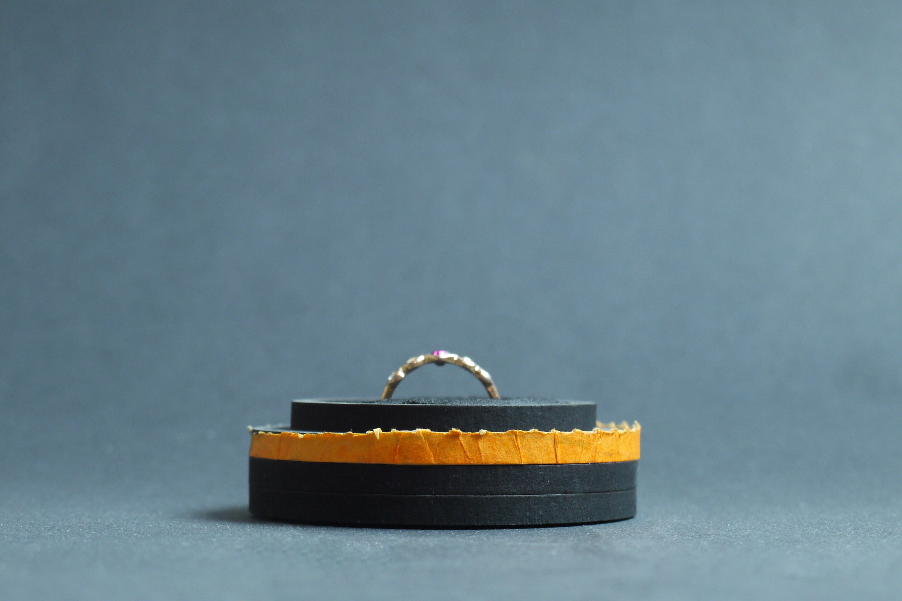
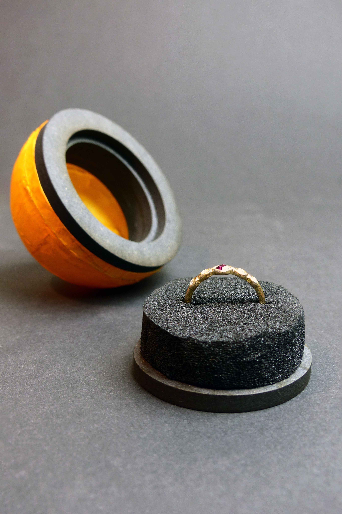
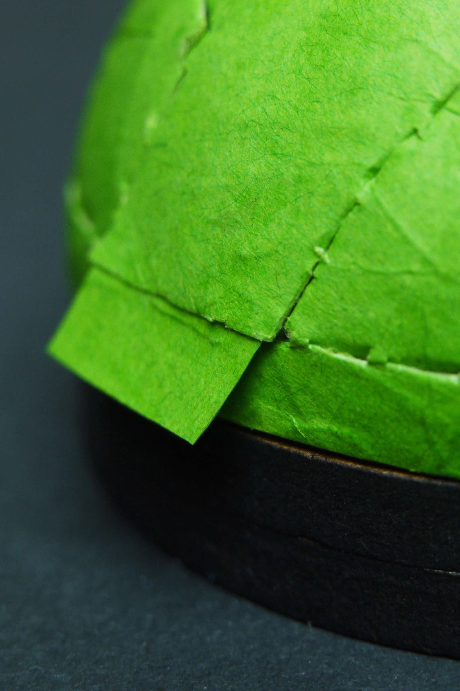

| Project name | Tangerine |
|---|---|
| Year | 2026 |
| About |
Conventional jewelry boxes essentially fulfill two tasks: they
secure the contents during transport and serve as gift packaging.
In everyday life, these functions are no longer needed; the box
ends up in some drawer. Tangerine adapts to changing requirements.
At first, a sturdy shell protects the jewelry, then opening it
creates a special moment, and from that point on it serves
long‑term as a presentation display that gives the jewelry a
valuable, permanent place at home.
The packaging consists of two parts. The first part, the main body, is made of four laser‑cut MDF rings. The second‑upper ring is slightly smaller than the one below it, creating a surrounding edge. A paper dome sits on this edge, shaped with tissue paper and paste. It is firmly glued to the MDF. The second part, the insert, is made of foam attached to an MDF disc. The construction is designed so that a jeweler can easily close the packaging, but reopening it is only possible by peeling. The jeweler places the jewelry into the foam and inserts the inner part into the main body. A sticker seals it. Opening is intuitive. You start at the tab and peel the dome like a tangerine. The perforation makes the tearing feel controlled and precise. With each piece, a new detail of the jewelry is revealed. Only a small paper rim remains, recalling the dome. Tangerine has now become a display in which the jewelry can be placed and presented again and again. |